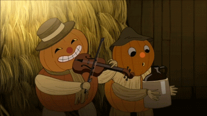
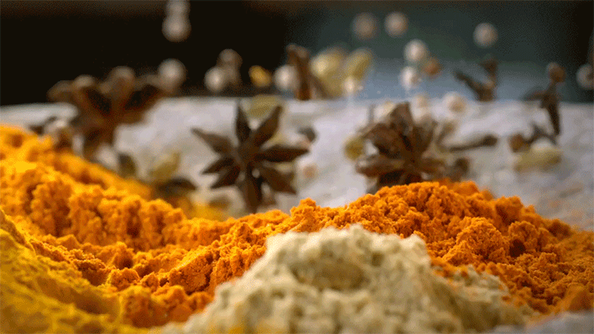
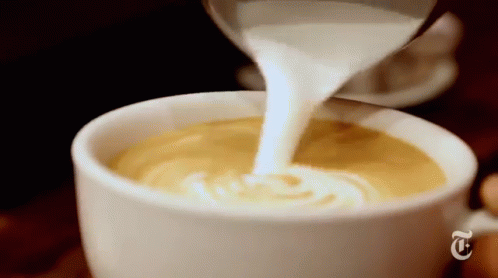

"Pumpkin spice" latte
Aš irgi nustebau, kad moliūgai dera su kava.
Reikės:
- Kaušelio kavos
- Pusės stiklinės pieno
- Šaukšto moliūgo tyrės
- Pusės šaukštelio kardamono
- Šaukštelio cinamono
- Pusės šaukštelio gvazdikėlių
- Pusės šaukštelio kvapniųjų pipirų
- Šiek tiek tarkuoto imbiero



- Į didelį puodelį įdėkite moliūgo tyrę, prieskonius bei imbierą. Sumaišykite.
- Užvirkite mažą puodelį Espresso kavos. Supilkit ją į puodelį su moliūgais.
- Pašildykit pieną. Užpilkite juo kavą.
- Palaukit, kol nusės nuosėdos.
Tiems, kurie OCD:
| Recepto vienetas |
Tikslus matavimas |
| Kaušelis |
10,2 g |
| Stiklinė |
236.588 ml |
| Šaukštas |
7,82 g |
| Šaukštelis |
4,2 g |
| Šiek tiek |
2 - 3 g |